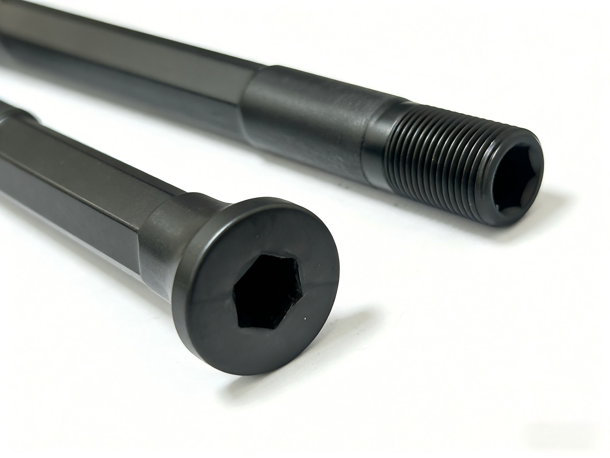

Lighter. Stronger. Recyclable.

Select your region below
Traditional carbon fiber uses epoxy resin — once cured, it's landfill forever. PAEK is different: a high-performance thermoplastic that can be re-melted and reformed. Lighter than aluminum, tougher than thermoset carbon, and fully recyclable.
The EU Circular Economy Action Plan mandates recycled content in vehicles — including bicycles — starting 2026. PAEK thermoplastic carbon fiber is the only thru axle technology that meets these requirements today.
CRAVESICK is built for the regulations of tomorrow.
¥899 / NT$6,100
12mm · 30g/pair · PAEK thermoplastic · Free shipping
Global shipping included. Contact: cs@cravsick.com